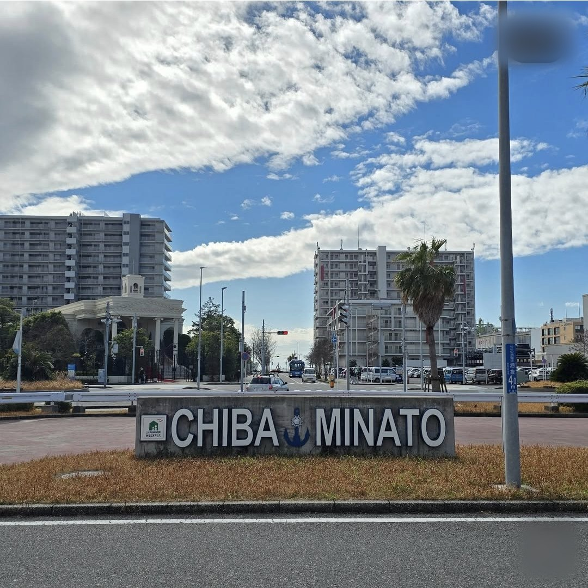
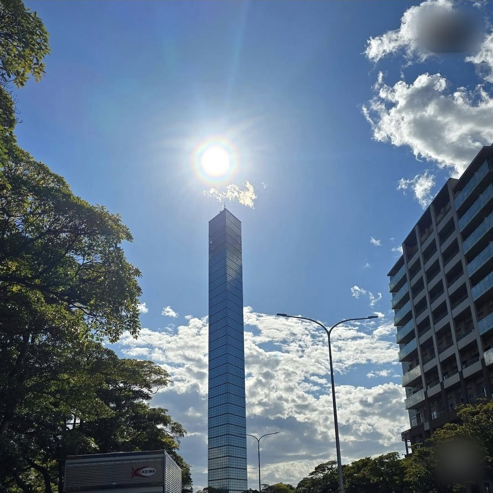
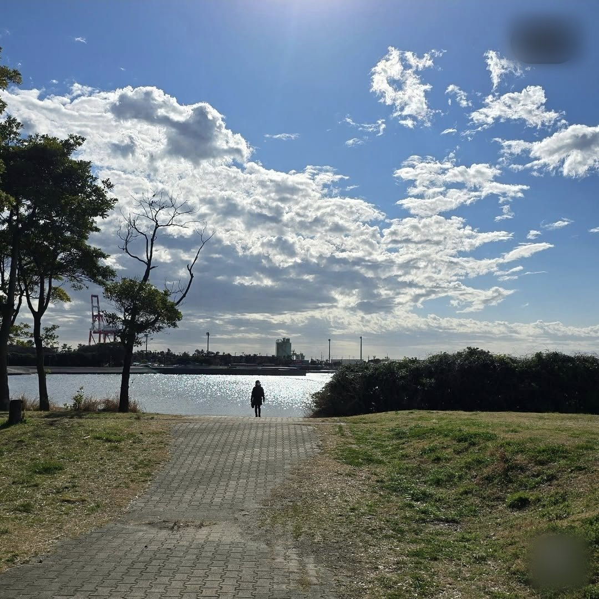
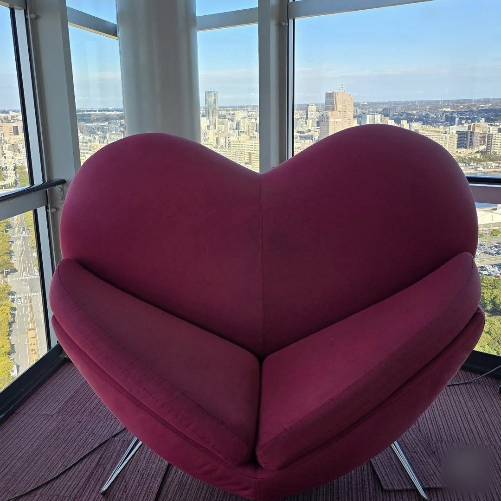

Japan · 2026
지바에서 시작했다 — 하프미러 탑 위의 첫날
오사카까지 열차로만 내려갈 참이었습니다. 그 긴 줄의 첫 칸이 지바였습니다. 2026년 3월 4일의 기록입니다.
일본 여행의 출발점을 도쿄로 잡지 않았습니다. 지바였습니다. 특별한 이유가 있었다기보다, 도착해서 바로 큰 도시로 들어가는 대신 하루를 옆에 두고 시작하고 싶었습니다.
지바는 도쿄 바로 옆인데도 성격이 꽤 다릅니다. 도쿄만을 끼고 있고, 그 만의 안쪽은 공업지대입니다. 관광지로 유명한 도시는 아니지만, 그래서 오히려 여행의 첫날에 어울리는 곳이었습니다. 아무것도 안 봐도 손해 보는 기분이 들지 않는 도시니까요.
지바미나토 — 표지석부터

첫 사진이 표지석입니다. 화강암 덩어리에 CHIBA MINATO라고 크게 새기고, 두 단어 사이에 파란 닻을 하나 박아 놓았습니다. 미나토(港)는 항구라는 뜻이니, 이름과 그림이 같은 말을 두 번 하는 셈입니다.
뒤로는 아파트 단지가 늘어서 있고, 야자수가 한 그루 서 있고, 그 위로 줄무늬처럼 길게 늘어진 구름이 하늘을 가로지릅니다. 3월 초의 공기는 사진에서도 차게 보입니다. 도로변 잔디는 아직 누렇고, 나무는 잎이 없습니다.
지바미나토역은 JR 게이요선과 지바 도시 모노레일이 만나는 역입니다. 도쿄역에서 게이요선으로 사십 분쯤이면 닿습니다. 역에서 나와 바다 쪽으로 십 분만 걸으면 오늘의 목적지가 통째로 보입니다.
은색 탑

지바 포트타워입니다. 아래에서 올려다보니 탑 꼭대기에 해가 정확히 얹혀 있었습니다. 렌즈 안에서 빛이 갈라지고, 그 아래로 좁고 긴 유리 기둥이 서 있습니다.
이 탑은 유리로 덮여 있습니다. 그냥 유리가 아니라 열선반사유리 5,571장을 붙인 하프미러입니다. 그래서 낮에는 탑이 스스로를 드러내는 대신 하늘과 구름을 그대로 비춥니다. 사진에서도 탑의 표면과 하늘의 경계가 애매합니다.
높이는 125.15미터. 1983년에 지바현 인구가 500만 명을 넘은 것을 기념해 짓기 시작했고, 지바현민의 날인 1986년 6월 15일에 문을 열었습니다. 도시가 어떤 숫자를 넘었다는 이유로 탑을 세우던 시대의 건물입니다.
물가까지 걸어가는 길

탑은 지바 포트파크 안에 있습니다. 잔디밭 사이로 벽돌 깔린 길이 나 있고, 그 길이 끝나는 자리가 바로 물가입니다.
사진 한가운데, 반짝이는 수면을 배경으로 사람이 하나 서 있습니다. 실루엣이라 나이도 표정도 안 보이고, 그냥 서 있다는 것만 보입니다. 건너편에는 붉고 흰 크레인과 굴뚝, 공장 건물이 늘어서 있습니다. 관광엽서에 나올 풍경은 아닙니다. 그런데 공업지대를 마주 보고 바다를 보는 공원이라는 게, 이 도시를 꽤 정직하게 보여줍니다.
하늘의 절반을 구름이 덮고 있고, 나무는 아직 겨울 가지 그대로입니다. 3월 초의 간토는 낮에 걸을 만하지만 바닷바람이 셉니다. 물가에서는 체감이 확 떨어집니다.
전망층 — WEST
탑에 올라가면 유리창에 방위가 적혀 있습니다. 사진 속 글자는 WEST. 서쪽 창이니 이 너머가 도쿄 방향입니다.
창턱을 따라 파란 안내판이 붙어 있는데, 어느 방향에 무엇이 있는지 알려주는 표시입니다. 맑은 날에는 여기서 후지산이 보인다고 합니다. 이날은 수평선 위로 도시의 실루엣이 아주 흐리게 걸려 있는 정도였습니다.
아래로는 도쿄만이 통째로 펼쳐집니다. 유조선이 정박해 있고, 방파제가 길게 뻗어 있고, 오른쪽으로는 흰 원통형 유류 탱크가 수십 개 늘어서 있습니다. 물은 오후 햇빛을 받아 은박지처럼 잘게 부서집니다.
왼쪽에는 코인 망원경 두 대. 한 대는 오래된 크림색 쌍안경이고, 다른 한 대는 화면이 달린 파란 기계입니다. 그 앞에서 모자를 쓴 사람이 망원경 대신 카메라를 들고 창밖을 찍고 있습니다. 천장에는 크리스마스 장식으로 보이는 전구줄이 아직 걸려 있습니다. 3월인데요.
연인의 성지에 혼자

같은 층 모퉁이에 하트 모양 소파가 놓여 있습니다. 자주색 벨벳에, 사람 둘이 나란히 앉으라고 가운데가 갈라져 있고, 가느다란 금속 다리가 넷. 뒤로는 유리창이 코너를 돌아가고, 그 너머로 도시가 낮게 깔려 있습니다.
이 탑은 2011년에 '연인의 성지'로 선정됐습니다. 일본 각지의 전망대나 공원을 그렇게 지정하는 제도가 있고, 지정되면 대개 이런 하트 조형물이 하나씩 들어섭니다. 이듬해에는 야경 유산으로도 뽑혔습니다.
혼자 다니면 이런 자리에서 잠깐 멈추게 됩니다. 앉으라고 만든 자리인데 둘이 앉으라고 만든 자리라서요. 그렇다고 못 앉을 것도 없습니다. 사진에는 소파만 찍혀 있습니다.
여기서 오사카까지, 어떻게 내려가나
서쪽 창 너머가 앞으로 갈 길이라고 썼는데, 실제로 그 길을 가는 방법은 크게 셋입니다. 첫날에 정리해두면 이후 일정이 편해집니다.
- 신칸센 — 도쿄에서 신오사카까지 도카이도 신칸센으로 두 시간 반 안팎. 가장 빠르고 가장 비쌉니다. 지바에서 도쿄까지 사십 분을 더하면 반나절이 안 걸립니다.
- 재래선 이어타기 — 보통열차만 갈아타며 내려가면 아홉 시간에서 열 시간. 봄·여름·겨울의 정해진 기간에는 청춘18킷푸로 하루 종일 보통열차를 탈 수 있어, 값으로만 보면 압도적으로 쌉니다. 대신 하루가 통째로 들어갑니다.
- 중간에 끊어 가기 — 도쿄, 나고야, 교토처럼 중간 도시에서 하루씩 자면서 내려가는 방식. 시간은 가장 오래 걸리지만, 열차로 종단하는 의미는 이쪽이 가장 큽니다.
세 방법의 값 차이가 꽤 큽니다. JR패스를 살지 말지는 여기서 갈립니다. 중간 도시를 여러 번 오르내릴 계획이면 패스가 이득이고, 서쪽으로 한 번 훑고 마는 일정이면 구간별로 사는 편이 쌉니다. 도쿄–신오사카 편도 한 번은 패스 값에 한참 못 미칩니다.
첫날을 돌아보고 — 실전 정보
- 날짜2026년 3월 4일 · 지바시
- 동선지바미나토역 → 지바 포트파크 → 지바 포트타워 전망층
- 가는 법도쿄역에서 JR 게이요선 약 40분, 역에서 도보 10분 남짓
- 날씨3월 초. 낮에는 걸을 만하지만 바닷바람이 차다
- 입국한국 여권 무비자 90일. Visit Japan Web 사전 등록 권장
1. 첫날은 큰 도시를 피한다
도착한 날 바로 도쿄로 들어가면 시차도 없는데 이상하게 지칩니다. 사람 많은 곳에서 짐을 끌고 길을 찾는 일이 겹치기 때문입니다. 지바처럼 한 정거장 옆에서 하루를 보내면, 다음 날 도쿄를 훨씬 가볍게 들어갑니다. 나리타에서 지바 시내는 도쿄보다 오히려 가깝습니다.
2. 열차 종단은 첫날부터 IC카드로
지바에서 오사카까지 열차로 내려갈 계획이라면 스이카·파스모 같은 IC카드를 첫날 손에 넣는 게 좋습니다. 게이요선이든 모노레일이든 찍고 타면 되고, 편의점 결제도 됩니다. 반면 JR패스는 신중하게 계산해야 합니다. 지바–오사카를 편도로 한 번 내려가는 정도라면 구간별로 사는 쪽이 대체로 쌉니다.
3. 탑은 해가 있을 때와 진 뒤가 다르다
포트타워는 하프미러라 낮에는 하늘을 비추고, 밤에는 조명이 들어옵니다. 야경 유산으로 뽑힌 것도 밤 쪽입니다. 시간이 허락하면 해 지기 전에 올라가 어두워질 때까지 머무는 편이 한 번에 둘 다 보는 방법입니다.
4. 3월 초 간토는 겉옷이 필요하다
사진 속 하늘은 봄 같지만 나무에는 잎이 없습니다. 낮 기온이 올라가도 바다 쪽은 바람이 셉니다. 전망층은 실내라 괜찮은데, 공원에서 물가까지 걸어 나가는 십 분이 춥습니다. 바람을 막아주는 겉옷 하나가 체감을 크게 바꿉니다.
남는 것
첫날에 대단한 걸 본 건 아닙니다. 표지석 하나, 유리로 덮인 탑 하나, 공장이 보이는 바다. 그런데 여행의 첫 사진이 도시 이름이 새겨진 돌이었다는 게 나중에 보니 마음에 들었습니다. 여기서 시작했다는 표시가 그것 말고 또 있을까 싶어서요.
이 탑에서 서쪽 창으로 본 방향이 앞으로 갈 길이기도 했습니다. 도쿄를 지나 서쪽으로, 계속 서쪽으로 내려가면 오사카가 나옵니다. 비행기로 건너뛰면 두 시간이면 되는 거리를, 굳이 땅에 붙어서 가보기로 한 여행의 첫날이었습니다.